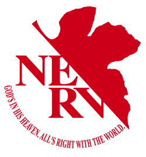

⚠ AVISO DE SEGURIDAD ⚠
Este sistema contiene información clasificada como SENSIBLE y superior. El acceso no autorizado está prohibido y será sometido a investigación inmediata por la División de Seguridad Interna de NERV. Todo el personal debe verificar sus credenciales antes de proceder.
AVISO DE CLASIFICACIÓN
Esta página contiene documentación confidencial sobre los Ángeles, las Unidades Evangelion y los eventos relacionados con el Proyecto de Instrumentalización Humana. El acceso está restringido exclusivamente al personal de NERV con autorización de credenciales o permiso bajo la supervisión directa del Comandante Ikari.
PATRONES BIOLÓGICOS DETECTADOS
Último Incidente: Patrón Azul detectado en el Geofront.
Estado: En observación.
Protocolo: Alerta de emergencia emitida a todas las unidades EVA.

Emblema oficial de NERV
Documentación Operativa
El siguiente contenido ha sido desclasificado para su revisión por el personal autorizado. Todos los informes deben ser tratados con la máxima confidencialidad. La divulgación no autorizada de esta información resultará en acciones disciplinarias inmediatas y la posible terminación del contrato del personal involucrado.
Acceso a Bases de Datos
- MAGI Sistema de Supercomputadoras - Consulta de datos en tiempo real.
- Registro de Incidentes de Ángeles - Historial completo de encuentros.
- Especificaciones Técnicas de EVA - Información clasificada de las unidades.
- Protocolos de Instrumentalización - Solo personal de nivel 5.
PROYECTO E - INSTRUMENTALIZACIÓN HUMANA
El Proyecto de Instrumentalización Humana es la máxima prioridad de SEELE y NERV. Toda la información relacionada con este proyecto está clasificada como NIVEL 5 - MÁXIMA PRIORIDAD. El acceso no autorizado resultará en consecuencias inmediatas e irrevocables.